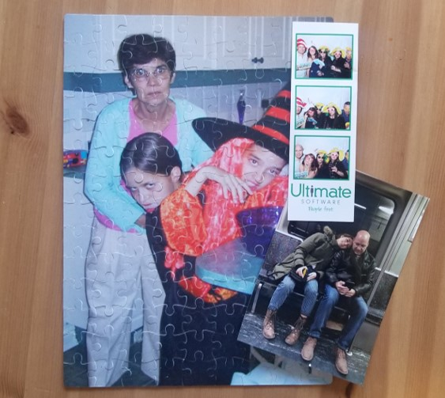
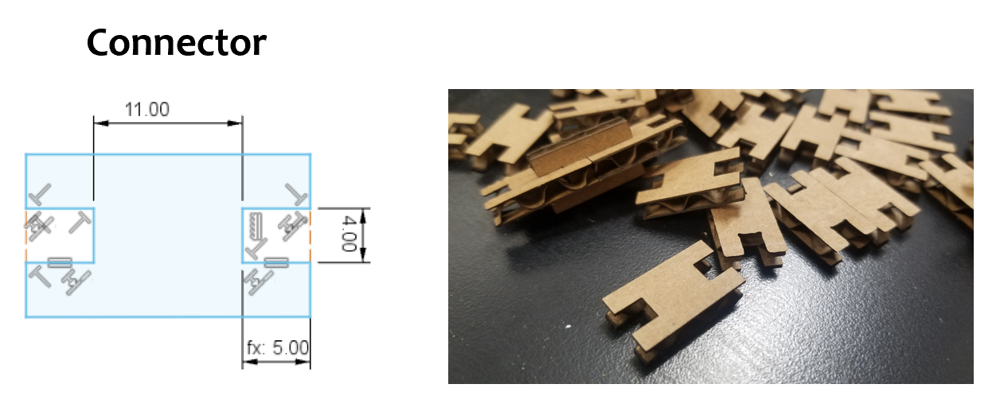

Week 2: 2D Design & Cutting
Size-adjustable picture frame
GENESIS
It has been on my mind for a while to get a picture frame for a puzzle picture my mom got me for Christmas. The puzzle picture requires non-standard frame dimensions.
That led to me thinking of how convenient an adjustable picture frame would be.
Here is the final product:

The picture frame can be adjusted for pictures of any size. I like twinkling lights. For that reason, I included pin holes so that the maker of the frame has the option of including sparkling LEDs.
OVERVIEW
Key features:
- High resolution: 1mm adjustability
- LEDs
- Structurally sound
- Can be hung from a wall
Materials:
- Cardboard
- LED (white, green, blue, yellow)
- Resistor (100 ohm)
- Copper tape
- Wires
Fabrication strategies used:
- Laser cutting 2D shapes
- Basic circuit assembly
- Vinyl cutting copper traces (future directions)
DESIGN & FABRICATION
The frame comes to fruition when all the press-fit pieces are put together. There are 3 types of pieces you need to make the frame:
1. Frame backing (top and bottom) – supports the picture’s upright position. Contains pin holes for LEDs.

2.Connector (sides and corners) – connects two adjacent pieces together.
3. Picture holder (vertical and horizontal) – contains a slot to hold the photograph.

The interlocking slots were designed to be 4mm wide and 5mm long. Filleted corners at the entrance of the slots are suggested for larger pieces. In this case, large fillets can harm the integrity of the press-fit lock. Therefore, I refrained from using fillets after trial-and-error.
Next to any interlocking slot, I maintained at least 4mm of space before adding any other feature to ensure the lock would not buckle/fail. Smaller spacings may be possible but were not tested.
The focus on minimizing spacing was to keep the frame from becoming bulky. The design was meant to not be bulky yet supply space for decorations (e.g., LEDs, vinyl stickers, and copper traces)
All pieces were drawn on Fusion360 and cut on a Thunder Laser Nova24.
ASSEMBLY
Assembling the frame is simple.
Frame – bottom and top:
Use connectors to connect the frame backings together. Use as many as needed to get your desired length. Join the pieces together by pushing one piece into the slot of the other. The pieces are press-fit together and therefore will not wiggle or fall apart – no glue necessary!
Now add the picture holder pieces. Note: the frame backings for the bottom row have LED holes close towards the slot to connect the picture holders. The picture holders have photograph slots on the same side as the interlocking slots. See above for details.
End the row with a connector and corner piece.
Frame – sides:
Use connectors to make the sides of the frames by stacking them. At instances of your choice, add a corner connector piece along with a picture holder piece. Add enough picture holders so that the photography is standing straight. The note mentioned above also applies here.
LEDs:
Place LEDs between two adjacent frame backings of your choice. Use copper tape to connect the legs of adjacent LEDs or if you prefer not to saturate the frame with lights, place the tape along all the back sides of the frame backings to complete the circuit. Make sure to end at the red and black wires.
A 3V power source supplies enough voltage for one LED; 5V is enough for 2 LEDs. For more LEDs in series, make sure to have a large enough voltage supply.
.jpg)
.jpg)
Go back to main page.